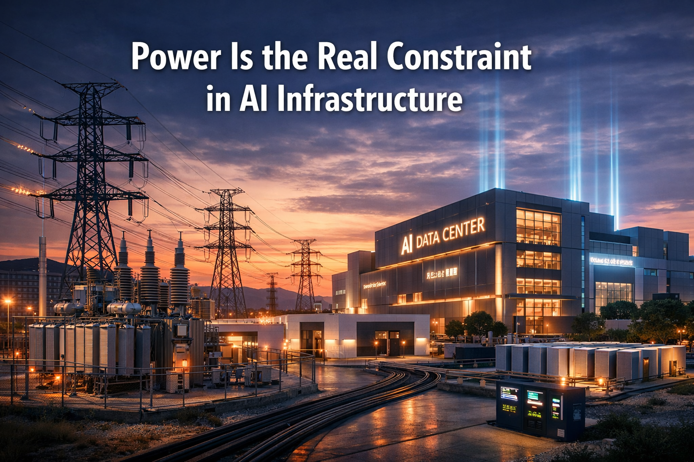

Power Is the Real Constraint in AI Infrastructure

The AI infrastructure conversation is changing.
Not long ago, the bottleneck was compute. Access to GPUs defined what you could build and when you could build it. Today, more organizations are securing hardware — and running into a different problem:
Power.
AI Changes the Rules
AI data centers don't behave like traditional facilities.
Power density is higher. Utilization is constant. Cooling requirements are more demanding and less forgiving. What used to be incremental upgrades has become a step change in how infrastructure needs to be designed and delivered.
That shift lands directly on the electrical layer.
Where Deployments Slow Down
In many cases, the limiting factor for new AI deployments isn't space or capital — it's access to power.
Utility timelines stretch.
Substation upgrades become necessary.
Critical equipment carries long lead times.
What looks viable on paper quickly turns into a multi-year dependency chain.
Meanwhile, hardware is ready now.
The Gap Between Hardware and Deployment
This is where projects stall.
You've secured compute.
You've defined the workload.
But the infrastructure needed to run it isn't available yet.
That gap isn't just inconvenient — it's expensive.
Idle hardware doesn't generate value. Delayed deployments push back everything downstream, from product timelines to revenue.
Rethinking How Infrastructure Gets Built
Traditional data center development is sequential. Site work, electrical, construction, and commissioning all happen in order.
That model doesn't match the pace of AI.
A more effective approach is to move critical infrastructure off-site, building and testing systems in parallel with site preparation. When everything comes together, deployment becomes installation — not construction.
Power as a First-Class Design Constraint
The most important shift is mindset.
Power can't be treated as a downstream consideration. It needs to be central to how AI infrastructure is planned from the start.
That means designing around real capacity, owning the electrical scope, and aligning infrastructure directly with hardware requirements.
When power is solved early, everything else moves faster.
The Bottom Line
AI infrastructure is no longer limited by access to compute.
It's limited by the ability to deploy it.
Power — how quickly you can secure it, deliver it, and scale it — is now the defining constraint. The teams that solve for that will move first. The rest will be waiting.